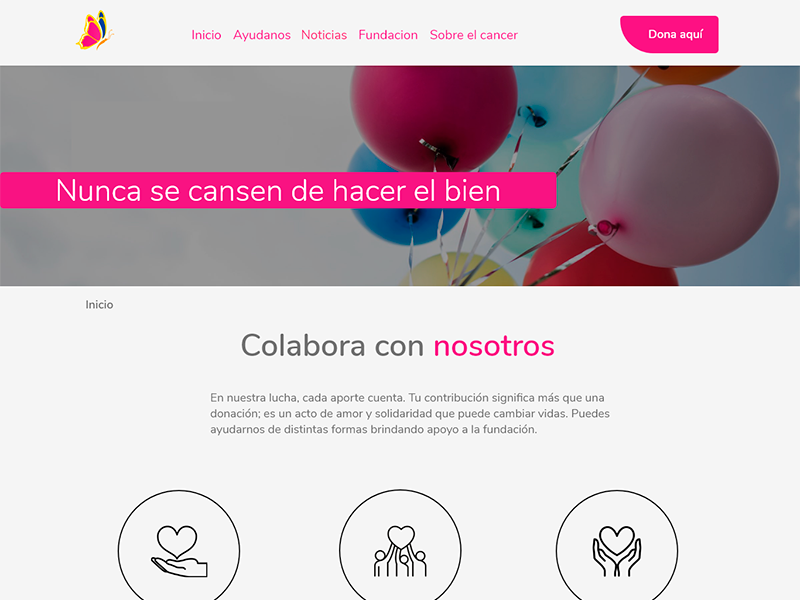

PORTAFOLIO



Luchadores de Colores
Research,Diseño y Desarrollo web
Luchadores de colores es una Fundacion ubicada en Santiago de Chile, la cual se enfoca en la ayuda en pacientes oncologicos infantiles. Como agencia de diseño y desarrollo se contacto con esta fundacion para ofrecer nuestros servicios gratuitos de diseño y desarrollo donde se llevo acabo una metodologia ACBD junto con Research de usuarios y arquitectura de informacion, para mejorar el diseño enfocado al usuario.


Feria de productos organicos
Research UX, Diseño web
Un proyecto para una feria de productos organicos, donde la problematica principal es la visibilidad y la presencia en internet, para facilitar el marketing de sus prodcutos para distintas "pymes" que participen en esta.